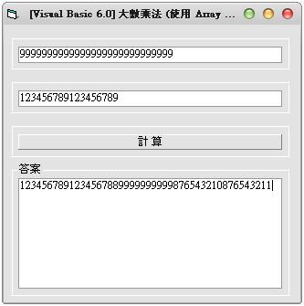

Visual Basic 6.0:大整數運算 加法與乘法 (使用 Array 字串) (作者：廖憲得 0xde)
大整數加法

Private Sub Command1_Click()
Text3 = ""
ReDim TempArray(999)
K = 0
For i = Len(Text1) To 1 Step -1
TempArray(K) = Mid(Text1, i, 1)
K = K + 1
Next i
K = 0
For i = Len(Text2) To 1 Step -1
Temp = Val(TempArray(K)) + Val(Mid(Text2, i, 1))
TempArray(K) = Temp Mod 10
K = K + 1
TempArray(K) = Val(TempArray(K)) + Val(Temp \ 10)
Next i
For i = 0 To UBound(TempArray)
If Val(TempArray(i)) > 9 Then
Temp = TempArray(i)
TempArray(K) = Temp Mod 10
K = K + 1
TempArray(K) = Val(TempArray(K)) + Val(Temp \ 10)
End If
Next i
For i = UBound(TempArray) To 0 Step -1
Text3 = Text3 & TempArray(i)
Next i
Do Until Val(Mid(Text3, 1, 1)) <> 0
Text3 = Mid(Text3, 2)
Loop
End Sub- 原始碼下載： 大數運算-大數加法.rar
大整數乘法

Private Sub Command1_Click()
Text3 = ""
ReDim TempArray(999)
K = 0
For i = Len(Text1) To 1 Step -1
NowIndex = K
For j = Len(Text2) To 1 Step -1
Temp = TempArray(NowIndex) + Mid(Text1, i, 1) * Mid(Text2, j, 1)
TempArray(NowIndex + 1) = Temp \ 10 + TempArray(NowIndex + 1)
TempArray(NowIndex) = Temp Mod 10
NowIndex = NowIndex + 1
Next j
K = K + 1
Next i
For i = UBound(TempArray) To 0 Step -1
Text3 = Text3 & TempArray(i)
Next i
Do Until Val(Mid(Text3, 1, 1)) <> 0
Text3 = Mid(Text3, 2)
Loop
End Sub- 原始碼下載： 大數運算-大數乘法.rar
【本文作者為「廖憲得」，原文網址為： http://www.dotblogs.com.tw/0xde/archive/2013/11/13/129111.aspx 與 http://www.dotblogs.com.tw/0xde/archive/2013/11/13/129101.aspx ，由陳鍾誠編輯後納入本雜誌】